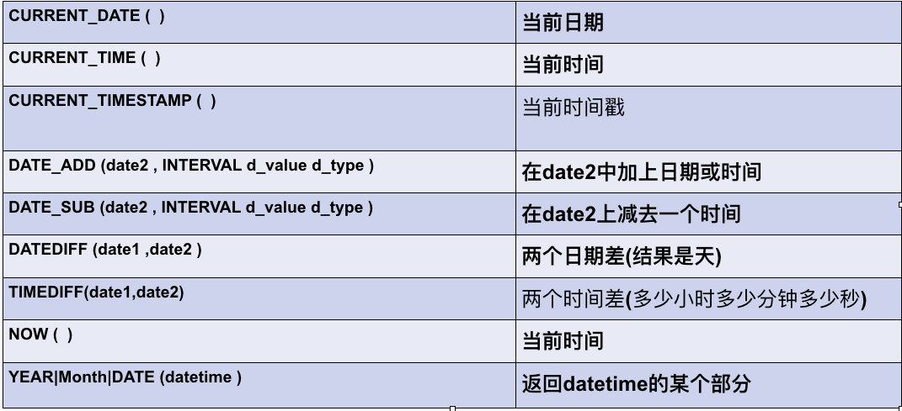
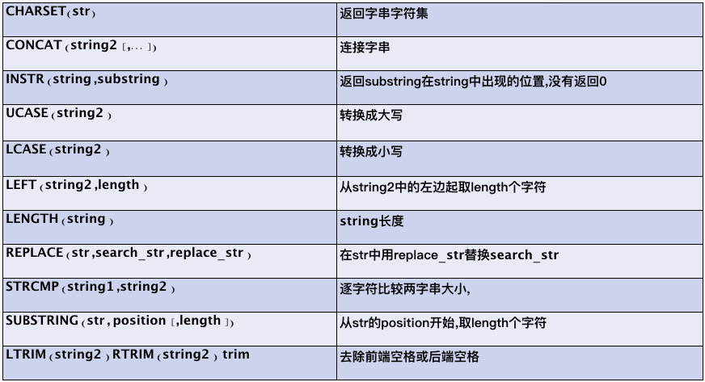
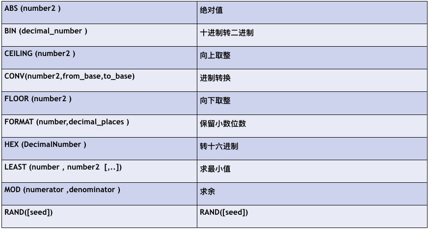
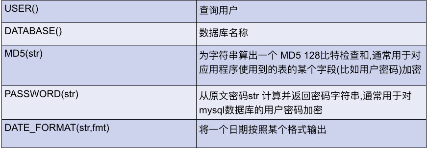

本章目录
一.视图
二.触发器
三.事务
四.存储过程
五.函数
六.数据备份与恢复
七.流程控制(了解)
视图是有一张表或多张表的查询结果构成的一张虚拟表
当我们在使用多表查询时 我们的sql语句可能会非常的复杂,如果每次都编写一遍sql'的话无疑是一件麻烦的事情,这时候就可以使用视图来避免多次编写sql的问题;
简答的说可以帮我们节省sql的编写,
视图的另一个作用是,可以不同的视图来展示开放不同数据的访问
例如,同一张工资表,老板可以查看全部,部门主管可以查看该部门所有人,员工只能看自己的一条记录
创建视图
CREATE [OR REPLACE] VIEW view_name [(column_list)]
AS select_statement加上OR REPLACE 时如果已经存在相同视图则替换原有视图
column_list指定哪些字段要出现在视图中
注意:由于是一张虚拟表,视图中的数据实际上来源于其他其他表,所以在视图中的数据不会出现在硬盘上
使用视图
视图是一张虚拟表 所以使用方式与普通表没有任何区别
查看视图
1.desc view_name; //查看数据结构
2.show create view view_name;//查看 创建语句
修改视图
alter view view_name as select_statement
删除视图
drop view view_name
案例1: 简化多表sql语句
有哦学生表和详细信息表 每次都要写查询连接查询比较繁琐,可以使用视图来简化查询.
#准备数据
create database db02 charset utf8;
use db02
create table student(
s_id int(3),
name varchar(20),
math float,
chinese float
);
insert into student values(1,'tom',80,70),(2,'jack',80,80),(3,'rose',60,75);
create table stu_info(
s_id int(3),
class varchar(50),
addr varchar(100)
);
insert into stu_info values(1,'二班','安徽'),(2,'二班','湖南'),(3,'三班','黑龙江');
#创建视图包含 编号 学生的姓名 和班级
create view stu_v (编号,姓名,班级) as
select
student.s_id,student.name ,stu_info.class
from student,stu_info
where student.s_id=stu_info.s_id;
# 查看视图中的数据
select *from stu_v;案例2: 隔离数据
一些情况下我们可能需要对某用户开放部分数据,隐藏其他数据,可以用视图来实现;
下例中:希望市场部的员工只能看市场部的工资信息
# 创建工资表
create table salarys(
id int primary key,
name char(10),
salary double,
dept char(10)
);
insert into salarys values
(1,"刘强东",900000,"市场"),
(2,"马云",800090,"市场"),
(3,"李彦宏",989090,"财务"),
(4,"马化腾",87879999,"财务");
# 创建市场部视图
create view dept_sc as select *from salarys where dept = "市场";
# 查看市场部视图
select *from dept_sc;注意 对视图数据的insert update delete 会同步到原表中,但由于视图可能是部分字段,很多时候会失败
总结:mysql可以分担程序中的部分逻辑,但这样一来后续的维护会变得更麻烦
如果需要改表结构,那意味着视图也需要相应的修改,没有直接在程序中修改sql来的方便
触发器是一段与表有关的mysql程序
当这个表在某个时间点发生了某种事件时 将会自动执行相应的触发器程序
当我们想要在一个表记录被更新时做一些操作时就可以使用触发器
但是我们完全可以在python中来完成这个事情,因为python的扩展性更强,语法更简单
语法:
CREATE TRIGGER t_name t_time t_event ON table_name FOR EACH ROW
begin
stmts.....
end支持的时间点(t_time):时间发生前和发生前后 before|after
支持的事件(t_event): update insert delete
在触发器中可以访问到将被修改的那一行数据
根据事件不同 能访问也不同
update 可用OLD访问旧数据 NEW访问新数据
insert 可用NEW访问新数据
delete 可用OLD访问旧数据
可以将NEW和OLD看做一个对象其中封装了这列数据的所有字段
案例:
有cmd表和错误日志表,需求:在cmd执行失败时自动将信息存储到错误日志表中
#准备数据
CREATE TABLE cmd (
id INT PRIMARY KEY auto_increment,
USER CHAR (32),
priv CHAR (10),
cmd CHAR (64),
sub_time datetime, #提交时间
success enum ('yes', 'no') #0代表执行失败
);
#错误日志表
CREATE TABLE errlog (
id INT PRIMARY KEY auto_increment,
err_cmd CHAR (64),
err_time datetime
);
# 创建触发器
delimiter //
create trigger trigger1 after insert on cmd for each row
begin
if new.success = "no" then
insert into errlog values(null,new.cmd,new.sub_time);
end if;
end//
delimiter ;
#往表cmd中插入记录，触发触发器，根据IF的条件决定是否插入错误日志
INSERT INTO cmd (
USER,
priv,
cmd,
sub_time,
success
)
VALUES
('egon','0755','ls -l /etc',NOW(),'yes'),
('egon','0755','cat /etc/passwd',NOW(),'no'),
('egon','0755','useradd xxx',NOW(),'no'),
('egon','0755','ps aux',NOW(),'yes');
# 查看错误日志表中的记录是否有自动插入
select *from errlog;
delimiter 用于修改默认的行结束符 ,由于在触发器中有多条sql语句他们需要使用分号来结束,但是触发器是一个整体,所以我们需要先更换默认的结束符,在触发器编写完后在将结束符设置回分号
注意:
外键不能触发事件 主表删除了某个主键 从表也会相应删除 但是并不会执行触发器
触发器中不能使用事务
相同时间点的相同事件的触发器 不能同时存在
语法:
drop trigger trigger_name;
案例:
drop trigger trigger1;同样的这种需求我们完全可以在python中来完成! mysql最想完成的事情是将所有能处理的逻辑全部放到mysql中,那样一来应用程序开发者的活儿就变少了,相应的数据库管理员的工资就高了,可惜大多中小公司都没有专门的DBA;
疑惑:修改行结束符后,触发器内的sql语句任然是以分号结束,为什么? 实际上在mysql中输入分号回车,mysql会立即将语句发送给服务器端,修改行结束符仅仅是告诉mysql客户端,语句没有写完,不要立即发送!
事务是逻辑上的一组操作,要么都成功,要么都失败
很多时候一个数据操作,不是一个sql语句就完成的,可能有很多个sql语句,如果部分sql执行成功而部分sql执行失败将导致数据错乱!
例如转账操作,
1.从原有账户减去转账金额
2.给目标账户加上转账金额
若中间突然断电了或系统崩溃了,钱就不翼而飞了!
start transaction; --开启事物,在这条语句之后的sql将处在同一事务,并不会立即修改数据库
commit;--提交事务,让这个事物中的sql立即执行数据的操作,
rollback;--回滚事务,取消这个事物,这个事物不会对数据库中的数据产生任何影响
案例:转账过程中发生异常
#准备数据
create table account(
id int primary key auto_increment,
name varchar(20),
money double
);
insert into account values(1,'赵大儿子',1000);
insert into account values(2,'刘大牛',1000);
insert into account values(3,'猪头三',1000);
insert into account values(4,'王进',1000);
insert into account values(5,'黄卉',1000);
# 赵大儿子给刘大牛转账1000块
# 未使用事务
update account set money = money - 1000 where id = 1;
update account set moneys = money - 1000 where id = 1; # money打错了导致执行失败python中使用事务案例:
try:
conn = pymysql.connect(host="127.0.0.1",user="root",password="",db="day46")
print("连接服务器成功!")
cursor = conn.cursor(pymysql.cursors.DictCursor)
sql = 'update account set money = money - 1000 where id = 1;'
sql2 = 'update account set money = money + 1000 where id = 2;' # money打错了将导致执行失败
try:
cursor.execute(sql)
cursor.execute(sql2)
conn.commit()
print("执行成功 提交")
except:
print("发送错误 回滚..")
conn.rollback()
except Exception as e:
print("连接服务器失败.....")
print(type(e),e)
finally:
if cursor:cursor.close()
if conn:conn.close()注意:事务的回滚的前提是能捕捉到异常,否则无法决定何时回滚,Python中很简单就实现了,另外mysql中需要使用存储过程才能捕获异常!
原子性:
事务是一组不可分割的单位,要么同时成功,要么同时不成功
一致性:
事物前后的数据完整性应该保持一致,(数据库的完整性:如果数据库在某一时间点下,所有的数据都符合所有的约束,则称数据库为完整性的状态);
隔离性:
事物的隔离性是指多个用户并发访问数据时,一个用户的事物不能被其它用户的事务所干扰,多个并发事务之间数据要相互隔离
持久性:
持久性是指一个事物一旦被提交,它对数据的改变就是永久性的,接下来即使数据库发生故障也不应该对其有任何影响
数据库使用者可以控制数据库工作在哪个级别下,就可与防止不同的隔离性问题
read uncommitted --不做任何隔离,可能脏读,幻读
read committed----可以防止脏读,不能防止不可重复读,和幻读,
Repeatable read --可以防止脏读,不可重复读,不能防止幻读
Serializable--数据库运行在串行化实现,所有问题都没有,就是性能低
select @@tx_isolation;--查询当前级别
set[session|global] transaction isolation level .... ;修改级别
实例:
set global transaction isolation level Repeatable read ;
修改后重新连接服务器生效
存储过程是一组任意的sql语句集合,存储在mysql中,调用存储过程时将会执行其包含的所有sql语句;与python中函数类似;
回顾触发器与视图都是为了简化应用程序中sql语句的书写,但是还是需要编写,而存储过程中可以包含任何的sql语句,包括视图,事务,流程控制等,这样一来,应用程序可以从sql语句中完全解放,mysql可以替代应用程序完成数据相关的的逻辑处理!
那我们以后都是用存储过程不就完了?
1.应用程序仅负责业务逻辑编写,所有与数据相关的逻辑都交给mysql来完成,通过存储过程(推荐使用)
优点:
应用程序与数据处理完解耦合,一堆复杂的sql被封装成了一个简单的存储过程,考虑到网络环境因素,效率高
应用程序开发者不需要编写sql语句,开发效率高
缺点:
python语法与mysql语法区别巨大,学习成本高
并且各种数据库的语法大不相同,所以移植性非常差
应用程序开发者与BDA的跨部门沟通成本高,造成整体效率低
2.应用程序不仅编写业务逻辑,还需要编写所有的sql语句
优点:扩展性高,对于应用程序开发者而言,扩展性和维护性相较于第一种都有所提高
缺点:sql语句过于复杂,导致开发效率低,且需要考虑sql'优化问题
3.应用程序仅负责业务逻辑,sql语句的编写交给ORM框架,(常用解决方案)
优点:应用程序开发者不需要编写sql语句,开发效率高
缺点:执行效率低,由于需要将对象的操作转化为sql语句,且需要通过网络发送大量sql
create procedure pro_name(p_Type p_name data_type)
begin
sql语句......流程控制
endp_type 参数类型
in 表示输入参数
out 表示输出参数
inout表示既能输入又能输出
p_name 参数名称
data_type 参数类型 可以是mysql支持的数据类型
案例:使用存储过程完成对student表的查询
delimiter //
create procedure p1(in m int,in n int,out res int)
begin
select *from student where chinese > m and chinese < n;
#select *from student where chineseXXX > m and chinese < n; 修改错误的列名以测试执行失败
set res = 100;
end//
delimiter ;
set @res = 0;
#调用存储过程
call p1(70,80,@res);
#查看执行结果
select @res;需要注意的是,存储过程的out类参数必须是一个变量,不能是值;
import pymysql
#建立连接
conn = pymysql.connect(
host="127.0.0.1",
user="root",
password="admin",
database="db02"
)
# 获取游标
cursor = conn.cursor(pymysql.cursors.DictCursor)
# 调用用存储过程
cursor.callproc("p1",(70,80,0)) #p1为存储过程名 会自动为为每个值设置变量,名称为 @_p1_0,@_p1_1,@_p1_2
# 提取执行结果时否有结果取决于存储过程中的sql语句
print(cursor.fetchall())
# 获取执行状态
cursor.execute("select @_p1_2")
print(cursor.fetchone())此处pymysql会自动将参数都设置一个变量所以可以直接传入一个值,当然值如果作为输出参数的话,传入什么都无所谓!
drop procedure 过程名称;修改存储过程意义不大,不如删除重写!
查看存储过程
#当前库所有存储过程名称
select `name` from mysql.proc where db = 'db02' and `type` = 'PROCEDURE';
#查看创建语句
show create procedure p1;存储过程中支持任何的sql语句包括事务!
案例:模拟转账中发生异常,进行回滚
delimiter //
create PROCEDURE p5(OUT p_return_code tinyint)
BEGIN
DECLARE exit handler for sqlexception
BEGIN
# ERROR
set p_return_code = 1;
rollback;
END;
# exit 也可以换成continue 表示发生异常时继续执行
DECLARE exit handler for sqlwarning
BEGIN
# WARNING
set p_return_code = 2;
rollback;
END;
START TRANSACTION;
update account set money = money - 1000 where id = 1;
update account set moneys = money - 1000 where id = 1; # moneys字段导致异常
COMMIT;
# SUCCESS
set p_return_code = 0; #0代表执行成功
END //
delimiter ;
#在mysql中调用存储过程
set @res=123;
call p5(@res);
select @res;
总结:抛开沟通成本,学习成本,存储过程无疑是效率最高的处理方式,面试会问,一些公司也有一些现存的存储过程,重点掌握!
函数与python中的定义一致,不在啰嗦!
日期相关:

字符串相关:

数字相关:

其他函数:

当然也包括之前学习的聚合函数
语法:
CREATE FUNCTION f_name(paramters)
returns dataType;
return value;说明:
paramters 只能是in 输入参数 参数名 类型
必须有返回值
不能呢加begin 和end
returns 后面是返回值的类型 这里不加分号
return 后面是要返回的值
案例:
将两数相加
create function addfuntion(a int,b int)
returns int return a + b;
#执行函数
select addfuntion(1,1);注意:
函数只能返回一个值
函数一般不涉及数据的增删改查 就是一个通用的功能
调用自定义的函数 与调用系统的一致 不需要call 使用select 可获得返回值
函数中不能使用sql语句
就像在java中不能识别sql语句一样
mysqldump -u -p db_name [table_name,,,] > fileName.sql可以选择要备份哪些表 如果不指定代表 全部备份
#示例：
#单库备份
mysqldump -uroot -p123 db1 > db1.sql
mysqldump -uroot -p123 db1 table1 table2 > db1-table1-table2.sql
#多库备份
mysqldump -uroot -p123 --databases db1 db2 mysql db3 > db1_db2_mysql_db3.sql
#备份所有库
mysqldump -uroot -p123 --all-databases > all.sql1.退出数据库后
mysql -u -p < filename.sql;
2.不用退出数据库
2.1 创建空数据库
2.2选择数据库
2.3然后使用source filename; 来进行还原
use db1;
source /root/db1.sql务必保证在相同版本之间迁移
# mysqldump -h 源IP -uroot -p123 --databases db1 | mysql -h 目标IP -uroot -p456if 条件 then
语句;
end if;
第二种 if elseif
if 条件 then
语句1;
elseif 条件 then
语句2;
else 语句3;
end if;
案例:编写过程 实现 输入一个整数type 范围 1 - 2 输出 type=1 or type=2 or type=other;
create procedure showType(in type int,out result char(20))
begin
if type = 1 then
set result = "type = 1";
elseif type = 2 then
set result = "type = 2";
else
set result = "type = other";
end if;
end大体意思与Swtich一样的 你给我一个值 我对它进行选择 然后执行匹配上的语句
语法:
create procedure caseTest(in type int)
begin
CASE type
when 1 then select "type = 1";
when 2 then select "type = 2";
else select "type = other";
end case;
enddeclare 变量名 类型 default 值;
例如: declare i int default 0;
循环输出10次hello mysql
create procedure showHello()
begin
declare i int default 0;
while i < 10 do
select "hello mysql";
set i = i + 1;
end while;
end没有条件 需要自己定义结束语句
语法:
输出十次hello mysql;
create procedure showloop()
begin
declare i int default 0;
aloop: LOOP
select "hello loop";
set i = i + 1;
if i > 9 then leave aloop;
end if;
end LOOP aloop;
end#类似do while
#输出10次hello repeat
create procedure showRepeat()
begin
declare i int default 0;
repeat
select "hello repeat";
set i = i + 1;
until i > 9
end repeat;
end
#输出0-100之间的奇数
create procedure showjishu()
begin
declare i int default 0;
aloop: loop
set i = i + 1;
if i >= 101 then leave aloop; end if;
if i % 2 = 0 then iterate aloop; end if;
select i;
end loop aloop;
end